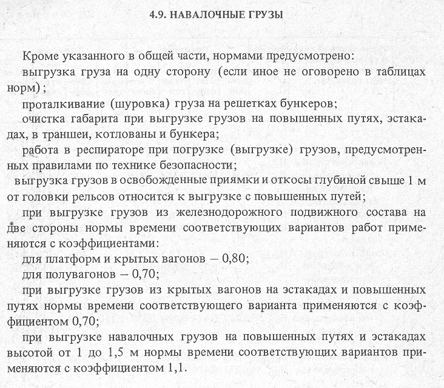

4.9.1. Погрузка навалочных грузов на железнодорожный подвижной состав и автотранспорт
4.9.2. Погрузка навалочных грузов на железнодорожный подвижной состав
4.9.3. Выгрузка навалочных грузов из полувагонов и с железнодорожных платформ на повышенных путях и на эстакадах высотой до 4 м без решеток
4.9.4. Выгрузка навалочных грузов из железнодорожного подвижного состава и автотранспорта
4.9.5. Выгрузка навалочных грузов из железнодорожного подвижного состава в бункера и на эстакадах с решетками
4.9.6. Выгрузка навалочных грузов из железнодорожного подвижного состава в траншеи, котлованы, бункера и на эстакадах высотой более 4 м без решеток